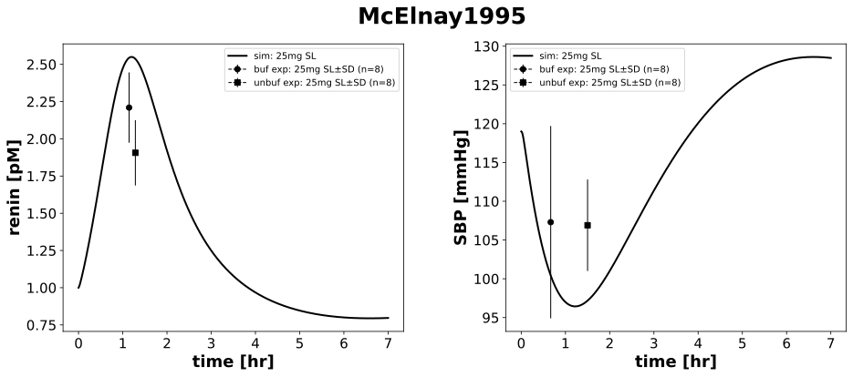

McElnay1995
Models
Datasets
- CAP25, PHO70_concentration_captopril_plasma_buf: McElnay1995_CAP25, PHO70_concentration_captopril_plasma_buf.tsv
- CAP25_concentration_captopril_plasma_unbuf: McElnay1995_CAP25_concentration_captopril_plasma_unbuf.tsv
- CAP25, PHO70_blood pressure systolic_buf: McElnay1995_CAP25, PHO70_blood pressure systolic_buf.tsv
- CAP25_blood pressure systolic_unbuf: McElnay1995_CAP25_blood pressure systolic_unbuf.tsv
- CAP25, PHO70_concentration_renin_plasma_buf: McElnay1995_CAP25, PHO70_concentration_renin_plasma_buf.tsv
- CAP25, PHO70_concentration_renin_plasma_unbuf: McElnay1995_CAP25, PHO70_concentration_renin_plasma_unbuf.tsv
Figures
- PK: McElnay1995_PK.svg
- PD: McElnay1995_PD.svg
{kind=link}
PK

|
PD
|  |
Code
../../../../experiments/studies/mcelnay1995.py
"""McElnay1995"""
from typing import Dict
from sbmlsim.data import DataSet, load_pkdb_dataframe
from sbmlsim.fit import FitMapping, FitData
from sbmlutils.console import console
from pkdb_models.models.captopril.experiments.base_experiment import (
CaptoprilSimulationExperiment,
)
from pkdb_models.models.captopril.experiments.metadata import Tissue, Route, Dosing, Health, Fasting, \
CaptoprilMappingMetaData, PKPDData
from sbmlsim.plot import Axis, Figure
from sbmlsim.simulation import Timecourse, TimecourseSim
from pkdb_models.models.captopril.helpers import run_experiments
#
#
class McElnay1995(CaptoprilSimulationExperiment):
"""Simulation experiment for McElnay1995.
Pharmacokinetics and pharmacodynamics study of buffered and unbuffered captopril administrated sublingually.
- overnight fast, light breakfast (400 kcal.)
"""
route = "SL"
dose = 25 # mg
forms = []
elements_unique = ["blood pressure systolic", "concentration_renin", "captopril"]
colors = {"control": "black"}
marker = {
"unbuf": "s",
"buf": "o",
}
def datasets(self) -> Dict[str, DataSet]:
dsets = {}
self.reset_state()
self.forms = []
for fig_id in ["Fig2", "TabText3", "TabText4"]:
df = load_pkdb_dataframe(f"{self.sid}_{fig_id}", data_path=self.data_path)
for label, df_label in df.groupby("label"):
dset = DataSet.from_df(df_label, self.ureg)
for element in self.elements_unique:
if element in label:
self.data_collection(element=element, label=label)
dset.unit_conversion(
self.data_type, self.conversion_factor
)
dsets[f"{label}"] = dset
if "unbuf" in label:
self.forms.append("unbuf")
else:
self.forms.append("buf")
break
# console.print(dsets.keys())
# console.print(dsets)
return dsets
def simulations(self) -> Dict[str, TimecourseSim]:
Q_ = self.Q_
tcsims = {}
tcsims[f"cap_{self.route}_{self.dose}"] = TimecourseSim(
Timecourse(
start=0,
end=7 * 60, # minutes
steps=400,
changes={
**self.default_changes(),
f"{self.route}DOSE_cap": Q_(self.dose, "mg"),
f"SBP_ref": Q_(119, "mmHg"),
},
)
)
return tcsims
def fit_mappings(self) -> Dict[str, FitMapping]:
mappings = {}
for kr, form in enumerate(self.forms):
mappings[
f"fm_cap{self.route}{self.dose}_{self.element_ids[kr]}_{form}_plasma_acute_nonfasting_all"
] = FitMapping(
self,
reference=FitData(
self,
dataset=self.clabels[kr],
xid="time",
yid="mean",
yid_sd="mean_sd",
count="count",
),
observable=FitData(
self,
task=f"task_cap_{self.route}_{self.dose}",
xid="time",
yid=self.yids[kr],
),
metadata=CaptoprilMappingMetaData(
tissue=Tissue.PLASMA,
route=Route.SL,
dosing=Dosing.SINGLE,
health=Health.HEALTHY,
fasting=Fasting.LIGHT_BR,
data=PKPDData.PK if "cap" in self.element_ids[kr] else PKPDData.PD,
),
)
# console.print(mappings)
return mappings
def figures(self) -> Dict[str, Figure]:
return {
**self.pk_figures(),
**self.pd_figures(),
}
def pk_figures(self) -> Dict[str, Figure]:
fig = Figure(
experiment=self,
sid="PK",
num_rows=1,
num_cols=1,
name=f"{self.__class__.__name__}",
height=self.panel_height,
width=self.panel_width,
)
plots = fig.create_plots(
xaxis=Axis(self.labels["time"], unit=self.units["time"]), legend=True
)
plots[0].set_yaxis(self.labels["[Cve_cap]"], unit=self.units["[Cve_cap]"])
# simulation
plots[0].add_data(
task=f"task_cap_{self.route}_{self.dose}",
xid="time",
yid="[Cve_cap]",
label=f"sim: {self.dose}mg SL",
color=self.colors["control"],
)
for kr, form in enumerate(self.forms):
if self.yids[kr] == "[Cve_cap]":
# dataset
plots[0].add_data(
dataset=self.clabels[kr],
xid="time",
yid="mean",
yid_sd="mean_sd",
count="count",
label=f"{form} exp: {self.dose}mg SL",
color=self.colors["control"],
marker=self.marker[form],
)
return {
fig.sid: fig,
}
def pd_figures(self) -> Dict[str, Figure]:
fig = Figure(
experiment=self,
sid="PD",
num_rows=1,
num_cols=2,
name=f"{self.__class__.__name__}",
height=self.panel_height,
width=self.panel_width * 2,
)
plots = fig.create_plots(
xaxis=Axis(self.labels["time"], unit=self.units["time"]), legend=True
)
for kyu, yid_unique in enumerate(["[ren]", "SBP"]):
plots[kyu].set_yaxis(self.labels[yid_unique], unit=self.units[yid_unique])
# simulation
plots[kyu].add_data(
task=f"task_cap_{self.route}_{self.dose}",
xid="time",
yid=yid_unique,
label=f"sim: {self.dose}mg SL",
color=self.colors["control"],
)
for kr, form in enumerate(self.forms):
if self.yids[kr] == yid_unique:
# dataset
plots[kyu].add_data(
dataset=self.clabels[kr],
xid="time",
yid="mean",
yid_sd="mean_sd",
count="count",
label=f"{form} exp: {self.dose}mg SL",
color=self.colors["control"],
marker=self.marker[form],
)
return {
fig.sid: fig,
}
if __name__ == "__main__":
run_experiments(McElnay1995, output_dir=McElnay1995.__name__)